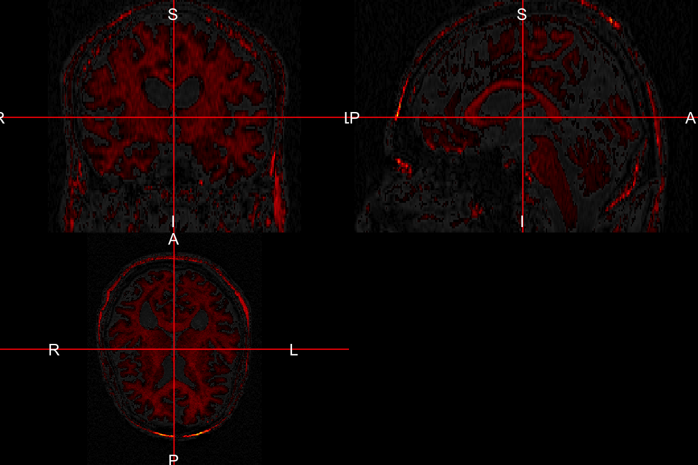
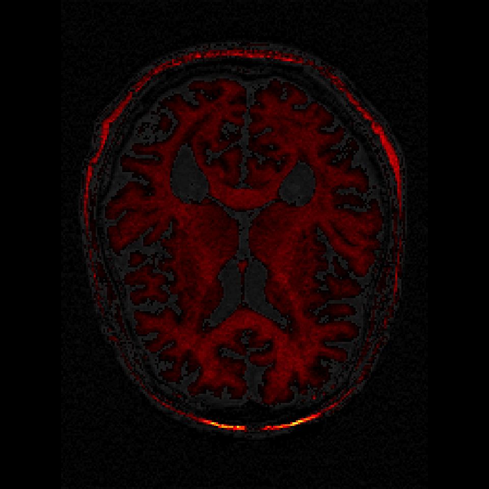
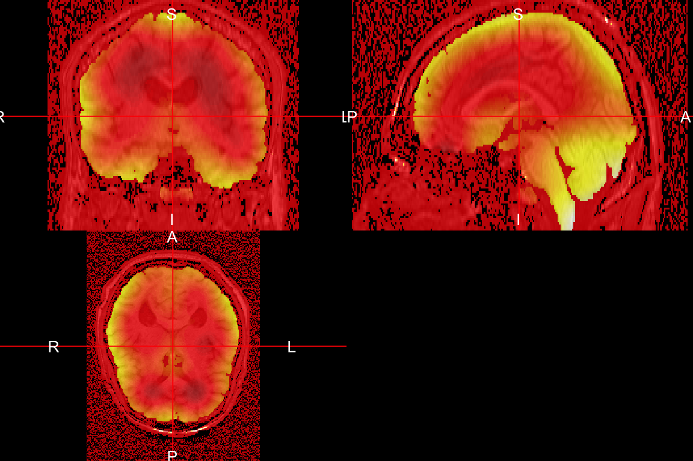
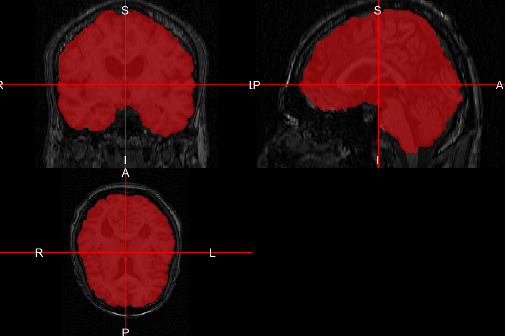
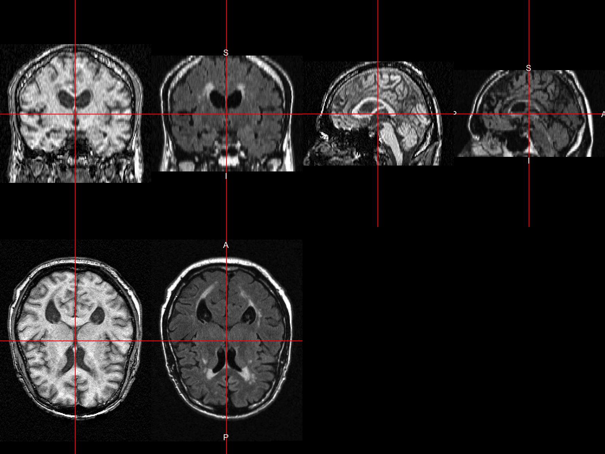
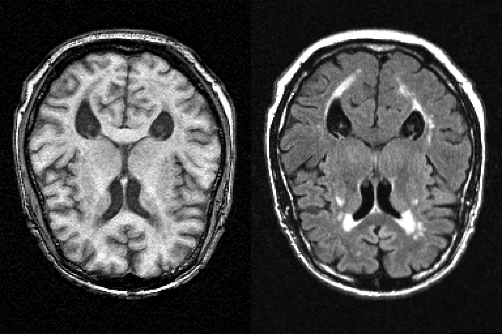
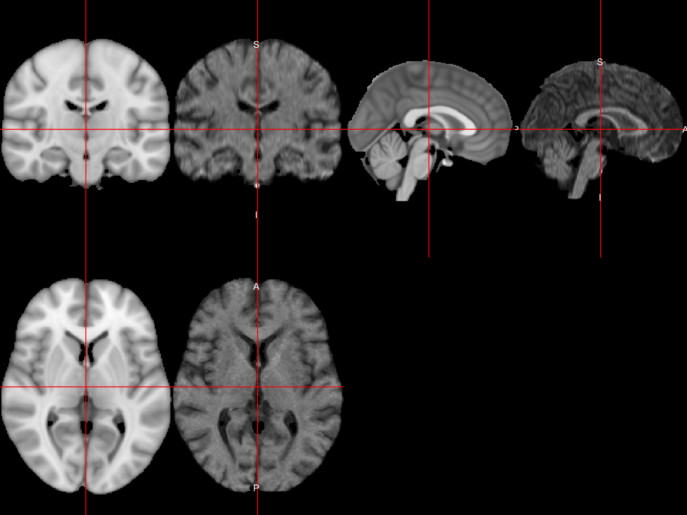
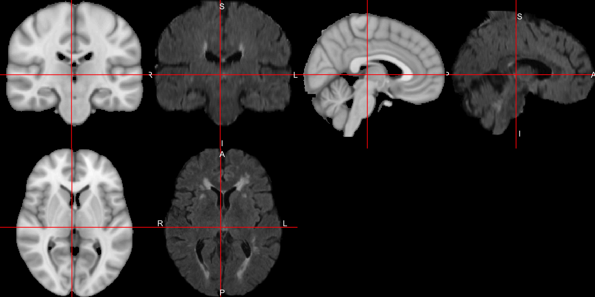
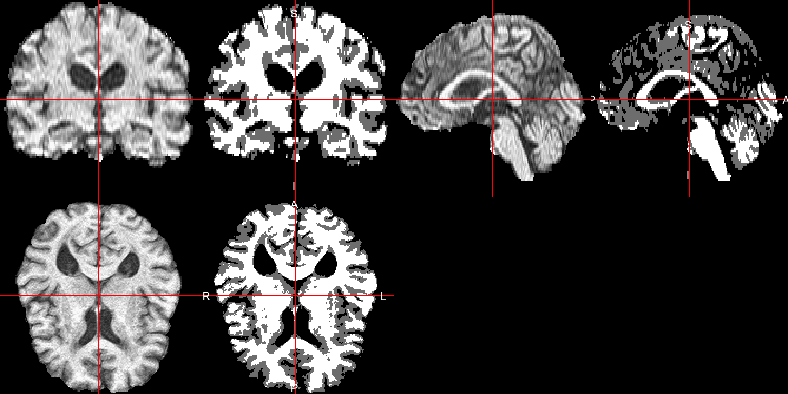

- Read/Write Images
- Visualization of Images
- Inhomogeneity/Bias Field Correction
- Skull Stripping/Brain Extraction
- Image Registration
- Tissue-Class Segmentation
- Image operations
- Complex Modeling (yeah - it's R)
February 19, 2015
What can we do in R?
Starting from Raw Data
oro.dicom- read/write DICOM data, the nifti object- Pure R implementation
dcm2niir- usesdcm2niifrom Chris Rorden- Can handle Par/Rec and many scanner types
matlabr- could usedicomreadmatlab code and excecute through R
Introduction: Packages
Medical Imaging Task View
oro.nifti: read/write data, the nifti objectfslr: process data (need FSL for most of the functionality)ANTsR: process data (full toolbox)extrantsr: makes ANTsR work with nifti objectsdti- adaptive smoothing and diffusion tensor toolsfmri- post-processing analysis: linear models and p-value smoothingAnalyzeFMRI- fMRI analysis (last updated in 2013)spm12rpackage calls out MATLAB using SPM
Data used from NITRC
Multi-modal dataset from HAMMER, (NIfTI conversion from ANALYZE).
Data from https://www.nitrc.org/frs/?group_id=187 (testing folder in White_Matter_Lesion_Segmentation_Testdata.zip)
4 MRI sequences: T1-weighted, T2-weighted, PD, FLAIR
files
t1 t2 pd flair
"T1.nii.gz" "T2.nii.gz" "PD.nii.gz" "FLAIR.nii.gz"
Basics: Read in the Files!
fslr: readnii uses oro.nifti::readNIfTI:
library(fslr) base_t1 = readnii(files["t1"])
- like an array
- ANTsR uses pointers (faster), but not as intuitive
Orthographic View
library(fslr) fslr::ortho2(base_t1)
Orthographic Overlays
over_50 = mask_img(base_t1, base_t1 > 40); ortho2(base_t1, over_50)

Image Slices
image(base_t1, z = 55, plot.type = "single")
Slice Overlays
over_50[over_50 <= 0] = NA; over_50 = cal_img(over_50) overlay(base_t1, over_50, z = 55, plot.type = "single")

Cropped Image Slices
Bias Field Correction
ANTsR/extrantsr
bias_correctfromextrantsrpackage callsANTsR::n4BiasFieldCorrection(N. J. Tustison et al. 2010)- EM-like, assumes bias is smooth over space, logs the data
library(extrantsr) n4_t1 = bias_correct(file = base_t1, correction = "N4", retimg = TRUE)
fslr: Uses method by Sled, Zijdenbos, and Evans (1998) (slow)
bc_t1 = fsl_biascorrect(file = base_t1)
FSLDIR='/usr/local/fsl/'; export FSLDIR; sh "${FSLDIR}/etc/fslconf/fsl.sh"; FSLOUTPUTTYPE=NIFTI_GZ; export FSLOUTPUTTYPE; $FSLDIR/bin/fast -B --nopve --out="/var/folders/1s/wrtqcpxn685_zk570bnx9_rr0000gr/T//Rtmpa4mKOM/file15e6f7f9ff9a7" "/private/var/folders/1s/wrtqcpxn685_zk570bnx9_rr0000gr/T/Rtmpa4mKOM/file15e6f60841581.nii.gz";
Bias Field Correction: Results
ratio = finite_img(n4_t1 / base_t1) ortho2(n4_t1, ratio, col.y = alpha(hotmetal(), 0.5))

Skull Stripping: FSL BET
ss_t1 = fslbet(n4_t1, outfile = "SS_Image")
FSLDIR='/usr/local/fsl/'; export FSLDIR; sh "${FSLDIR}/etc/fslconf/fsl.sh"; FSLOUTPUTTYPE=NIFTI_GZ; export FSLOUTPUTTYPE; $FSLDIR/bin/bet2 "/private/var/folders/1s/wrtqcpxn685_zk570bnx9_rr0000gr/T/Rtmpa4mKOM/file15e6f2126f0db.nii.gz" "./SS_Image"
Overlaying Skull Stripped mask
mask = ss_t1 > 0
ortho2(base_t1, y = mask, col.y = alpha("red", 0.5))

Visualization: Cropped Image Slices
cropped = dropEmptyImageDimensions(ss_t1) image(cropped, z = floor(dim(cropped)[3]/2), plot.type = "single")
Visualization: 3-dimensions
rgl,misc3d(contour3dfunction)brainR- put on a webpage with some controls
devtools::source_gist("bd40d10afabc503d71e8")

Rigid-Body Registration
ANTsR/extrantsr
antsRegistration- rigid/affine/non-linear diffeomorphicextrantsr::registration- wraps antsRegistration to useniftiobjects
fslr
flirt- linear/affine registrationfnirt- non-linear registration (need affine first)fnirt_with_affine- wraps above 2Image Registration: Rigid-Body Registration
registrationfromextrantsris a general function to do linear/non-linear registration- uses
antsRegistration
ants_reg_flair = registration( filename = files["flair"], template.file = n4_t1, typeofTransform = "Rigid")
Rigid-Body Registration Results

Rigid-Body Registration Slice

Non-linear Registration
- Registering the skull-stripped T1-weighted image to the MNI 152 brain image
- Uses Symmetric Normalization (SyN) (B. B. Avants et al. 2008)
template.file = mni_fname(mm = "1", brain = TRUE) ss_t1_to_mni = registration( filename = ss_t1, template.file = template.file, typeofTransform = "SyN", remove.warp = FALSE, outprefix = "temp")
Non-linear Registration Results

Applying Registration Transformations
reg_flair_to_mni = ants_apply_transforms( fixed = template.file, moving = ants_reg_flair$outfile, # registered FLAIR interpolator = "Linear", transformlist = ss_t1_to_mni$fwdtransforms )
Non-linear Transformation of FLAIR

Preprocess MRI: within a visit
We can develop pipelines/full analyses!
extrantsr::preprocess_mri_withinwill do inhomogeneity correction, skull strip (or mask), and register to the first scan.proc_images = preprocess_mri_within( files = files[c("t1", "t2", "pd", "flair")], maskfile = ss_t1 > 0)Preprocess MRI: across visits
preprocess_mri_acrosscombinespreprocess_mri_withinandregistration. If you had baseline/follow-up data:outfiles = gsub("[.]nii", '_process.nii', files) preprocess_mri_across( baseline_files = files[c("base_t1", "base_t2", "base_pd", "base_flair")], followup_files = files[c("f_t1", "f_t2", "f_pd", "f_flair")], baseline_outfiles = outfiles[c("base_t1", "base_t2", "base_pd", "base_flair")], followup_outfiles = outfiles[c("f_t1", "f_t2", "f_pd", "f_flair")], maskfile = "Brain_Mask.nii.gz")Tissue-Class Segmentation
ANTsR/extrantsr: uses Atropos (Brian B Avants et al. 2011)
ANTsR-atropos,extrantsr-otropos
tissue_seg = otropos( a = ss_t1, x = mask)
fslr: uses FAST (Zhang, Brady, and Smith 2001)
--nobiasas an option does not do bias field correction
fast_t1 = fast(ss_t1, opts = "--nobias") FSLDIR='/usr/local/fsl/'; export FSLDIR; sh "${FSLDIR}/etc/fslconf/fsl.sh"; FSLOUTPUTTYPE=NIFTI_GZ; export FSLOUTPUTTYPE; $FSLDIR/bin/fast --nobias --out="/var/folders/1s/wrtqcpxn685_zk570bnx9_rr0000gr/T//Rtmpa4mKOM/file15e6f60cbfee3" "/private/var/folders/1s/wrtqcpxn685_zk570bnx9_rr0000gr/T/Rtmpa4mKOM/file15e6f682913b1.nii.gz";See alos
spm12r_segmentANTsR Tissue-Class Segmentation
ANTsR Tissue-Class Segmentation

fslr Tissue-Class Segmentation
Image operations
fslr
fslsmooth- Gaussian/box smoothingfslerode/fsldilate- erosion/dilationfslfill/fslfill2- fill holes
spm12r
spm_bwlabel- label connected components
ANTsR
smooth_image- Gaussian smoothingoMath("ME")/oMath("MD")- erosion/dilationoMath("FillHoles")- fill holesoMath("GetLargestComponent")- find largest components
fMRI
fsl_slicetimer- slice timing correctionANTsR::preprocessfMRIspm12r- slice timing correction
- realignment - get motion correction parameters
- co-registration
- segmentation/normalization to a template
Intensity Normalization
- WhiteStripe (Shinohara et al. 2014)
- Whole brain z-scoring
- Histogram matching
- General standardization methods
Overview
- Many methods are being developed for processing neuroimaging in R
- Analysis tools are largely already in R
- These are not standardized nor centralized
- Develop something like BioConductor
- standard data structures
- standard data sets
- NITRC isn't exactly what we want
- GitHub and Neuroconductor
Viz
Bibliography
Avants, B. B., C. L. Epstein, M. Grossman, and J. C. Gee. 2008. “Symmetric Diffeomorphic Image Registration with Cross-Correlation: Evaluating Automated Labeling of Elderly and Neurodegenerative Brain.” Medical Image Analysis, Special issue on the third international workshop on biomedical image registration - WBIR 2006, 12 (1): 26–41. doi:10.1016/j.media.2007.06.004.
Avants, Brian B, Nicholas J Tustison, Jue Wu, Philip A Cook, and James C Gee. 2011. “An Open Source Multivariate Framework for N-Tissue Segmentation with Evaluation on Public Data.” Neuroinformatics 9 (4). Springer: 381–400.
Shinohara, Russell T., Elizabeth M. Sweeney, Jeff Goldsmith, Navid Shiee, Farrah J. Mateen, Peter A. Calabresi, Samson Jarso, Dzung L. Pham, Daniel S. Reich, and Ciprian M. Crainiceanu. 2014. “Statistical Normalization Techniques for Magnetic Resonance Imaging.” NeuroImage: Clinical 6: 9–19. doi:10.1016/j.nicl.2014.08.008.
Sled, John G, Alex P Zijdenbos, and Alan C Evans. 1998. “A Nonparametric Method for Automatic Correction of Intensity Nonuniformity in MRI Data.” Medical Imaging, IEEE Transactions on 17 (1). IEEE: 87–97.
Tustison, Nicholas J., Brian B. Avants, Philip A. Cook, Yuanjie Zheng, Alexander Egan, Paul A. Yushkevich, and James C. Gee. 2010. “N4ITK: Improved N3 Bias Correction.” IEEE Transactions on Medical Imaging 29 (6): 1310–20. doi:10.1109/TMI.2010.2046908.
Zhang, Yongyue, Michael Brady, and Stephen Smith. 2001. “Segmentation of Brain MR Images Through a Hidden Markov Random Field Model and the Expectation-Maximization Algorithm.” Medical Imaging, IEEE Transactions on 20 (1). IEEE: 45–57.